Diagram Core v1
diagram-core-v1 · 56/56 icons · showcase-v1
Infrastructure diagrams, Architecture systems, Technical operations
HTML · SVG · Quality · Spec · Frozen release
Current frozen releases with complete public showcase coverage. Full browser export matrices are produced separately as release evidence.
PYTHONPATH=src python3 scripts/build_icon_system_release_evidence.py
Verify later with PYTHONPATH=src python3 scripts/build_icon_system_release_evidence.py --verify.

diagram-core-v1 · 56/56 icons · showcase-v1
Infrastructure diagrams, Architecture systems, Technical operations
HTML · SVG · Quality · Spec · Frozen release

illustrated · 56/56 icons · illustrated-performance-v6
AI explainers, Character-led workflows, Animated presentations
HTML · SVG · Quality · Spec · Frozen release